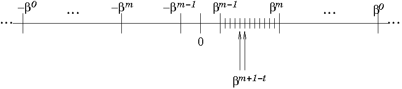
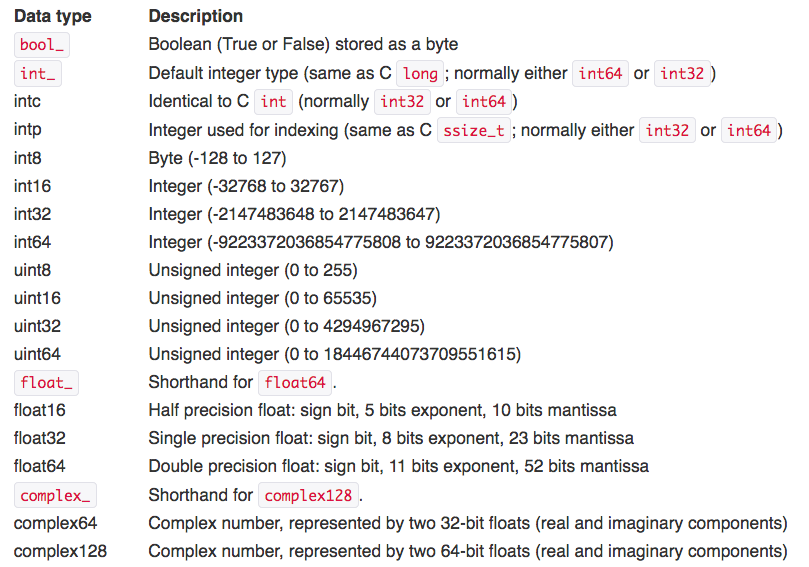

2 + 2 4Objetivo general. - Revisar y entender cómo funcionan los números y la aritmética de punto flotante.
MACTI-Analisis_Numerico_01 by Luis M. de la Cruz is licensed under Attribution-ShareAlike 4.0 International


Trabajo realizado con el apoyo del Programa UNAM-DGAPA-PAPIME PE101922
La aritmética que se realiza en una computadora digital es diferente de la que se usa en matemáticas, por ejemplo: * \(2 + 2 = 4\)
2 + 2 44**216import math
math.sqrt(3)**22.9999999999999996Observa que en este último ejemplo, el resultado no es exacto, solo aproximado al valor real.
En la aritmética continua se permite que un número real pueda tener un número infinito de dígitos.
\[\frac{1}{3} = 0.3333333 \dots 33333 \dots \]
Pero en una computadora solo puede representar un subconjunto de los números reales, el cual solo contiene números racionales (positivos y negativos).
1/30.3333333333333333format(1/3, '.55f')'0.3333333333333333148296162562473909929394721984863281250'En el hardware de una computadora, los números se aproximan en base binaria; particularmente los números de punto flotante se aproximan con fracciones binarias. Por ejemplo, la fracción binaria \(0.101\) se aproxima como sigue:
\[ 0.101 = \frac{1}{2^1} + \frac{0}{2^2} + \frac{1}{2^3} = 0.5 + 0.125 = 0.625 \]
Observe que la suma de fracciones anterior se puede escribir como:
\[ \frac{1 * 2^2 + 1}{2^3} = \frac{5}{2^3} = 0.625 \]
es decir, la representación del número \(0.625\) está dada en la forma: \(\displaystyle \frac{J}{2^N}\).
En base 10 el número anterior se puede representar somo sigue:
\[ 0.625 = \frac{6}{10} + \frac{2}{10^2} + \frac{5}{10^3} \]
Pero no siempre es posible representar los números de punto flotante con fracciones binarias.
Como se puedo observar anteriormente, la fracción \(1/3\) se puede aproximar como una fracción en base \(10\). Por ejemplo: \[ \begin{eqnarray} 0.3 & = & \frac{3}{10} \\ 0.33 & = & \frac{3}{10} + \frac{3}{100} \\ 0.333 & = &\frac{3}{10} + \frac{3}{100} + \frac{3}{1000} \end{eqnarray} \]
Pero en binario no es posible representar \(1/3\) de manera exacta.
Otro ejemplo es el número \(0.1 = 1/10\):
print(0.1)0.1print(1/10) # El resultado que imprime se ve correcto
# pero el resultado de la operación es
# la fracción binaria representable más cercana
# al valor correcto.0.1format(0.1, '.55f') '0.1000000000000000055511151231257827021181583404541015625'format(1/10, '.55f') '0.1000000000000000055511151231257827021181583404541015625'Existen varios números decimales que comparten la misma fracción binaria más aproximada.
Por ejemplo, los siguientes números \[ \begin{array}{l} 0.1 \\ 0.10000000000000001 \\ 0.1000000000000000055511151231257827021181583404541015625 \end{array} \]
son todos aproximados por la siguiente fracción: \[ \frac{3602879701896397}{2^{55}} \]
format(3602879701896397 / 2 ** 55, '.55f')'0.1000000000000000055511151231257827021181583404541015625'format(0.10000000000000001, '.55f') '0.1000000000000000055511151231257827021181583404541015625'format(0.1000000000000000055511151231257827021181583404541015625, '.55f') '0.1000000000000000055511151231257827021181583404541015625'Esto es muy importante cuando se usan constantes matemáticas en cálculos numéricos
print(str(math.pi)) # Se redondea el valor real almacenado
print(repr(math.pi)) # para propósitos de despliegue
print(format(math.pi, '.55f')) # muestra el valor real almacenado3.141592653589793
3.141592653589793
3.1415926535897931159979634685441851615905761718750000000Observación: Esto puede crear ciertas ilusiones sobre el valor real de un número.
¿Que resultará de las siguientes evaluaciones?:
0.1 == 1/10
0.1 == repr(1/10)
repr(0.1) == 1/10
.1 + .1 + .1 == 0.3
round(.1, 1) + round(.1, 1) + round(.1, 1) == round(.3, 1)
round(.1 + .1 + .1, 10) == round(.3, 10)Explique el resultado de las evaluaciones.
Hint: Checar el valor más aproximado almacenado en memoria usando por ejemplo format(x,'.52f') y también usar el comando type para conocer el tipo de dato.
0.1 == 1/10True0.1 == repr(1/10) Falserepr(0.1) == 1/10False0.1 + 0.1 + 0.1 == 0.3Falseformat(0.3, '.55f')'0.2999999999999999888977697537484345957636833190917968750'round(.1, 1) + round(.1, 1) + round(.1, 1) == round(.3, 1)Falseround(.1 + .1 + .1, 10) == round(.3, 10)TrueLas computadoras cuentan con una cierta capacidad finita para almacenar información.
Los números reales se representan mediante los llamados números de punto flotante (floating point numbers) usando las siguentes características:
Cada número de punto flotante se representa como: \[ \pm .d_1d_2d_3\dots d_t \times \beta^e \] donde \(0 \le d_i \le \beta - 1 \,\,\, (i= 1,2,3,\dots , t)\)
La forma normalizada ocurre cuando \(d_1 \neq 0\)
El número de dígitos en la mantisa es finito, lo que propicia un error en la representación y en las operaciones aritméticas
IBM 3000 series
| Signo | \[e\] | \[t\] |
|---|---|---|
| 0 | 1000010 | 101100110000010000000000 |
\[ 1000010 = 1 \cdot 2^6 + 0 \cdot 2^5 + 0 \cdot 0^4 + 0 \cdot 2^3 + 0 \cdot 2^2 + 1 \cdot 2^1 + 0 \cdot 2^0 = 66 \Longrightarrow 16^{66-64}. \]
\[ \left[ \left(\frac{1}{2}\right)^1 + \left(\frac{1}{2}\right)^3 + \left(\frac{1}{2}\right)^4 + \left(\frac{1}{2}\right)^7 + \left(\frac{1}{2}\right)^8 + \left(\frac{1}{2}\right)^{14} \right] 16^{66-64} = 179.015625 \]
| 0 | 1000010 | 101100110000001111111111 | = | 179.0156097412109375 |
|---|---|---|---|---|
| 0 | 1000010 | 101100110000010000000001 | = | 179.0156402587890625 |
\[ \Longrightarrow 179.015625 \mbox{ representa } [179.0156097412109375, 179.0156402587890625] \]

En 1985, el IEEE (Institute for Electrical and Electronic Engineers) publicó: Binary Floating Point Arithmetic Standard 754, 1985 .Se especifican los formatos para precisión simple, doble y extendida, y esos estándares son usados por muchos constructores de CPUs.
Recordemos que muchas fracciones decimales no pueden representarse exactamente como fracciones binarias. Por esta razón, todos los lenguajes de programación no muestran el número decimal exacto que se espera.
La mayoría de las computadoras utilizan el estándar IEEE-754 para representar números de punto flotante. Los números de doble precisión en el IEEE-754 tienen 53 bits de precisión, por lo tanto, la representación del número \(0.1\) en este sistema requiere de un número \(J\), de 53 bits, tal que:
\[ \frac{J}{2^N} \approx 0.1 \]
Usando la fórmula anterior tenemos que:
\[ J \approx \frac{2^N}{10} \]
Dado que \(J\) debe tener exactamente 53 bits, entonces se cumple que \(2^{52} \leq J \leq 2^{53}\). Se puede comprobar fácilmente que para que esto ocurra, entonces \(N = 56\):
J = 2**56 // 10 # división entera
print('{} < {} < {}'.format(2**52, J, 2**53))
print(2**52 < J < 2**53)4503599627370496 < 7205759403792793 < 9007199254740992
TrueObserve que en la celda anterior realizamos la división entera con el propósito de comparar con otros valores enteros. Si hacemos el cálculo usando flotantes y luego convertimos a entero obtenemos el valor requerido de \(J\):
J = int(2**56 / 10)
J7205759403792794Entonces, la representación de \(0.1\) en este sistema es \(\displaystyle \frac{7205759403792794}{2^{56}}\) que se puede reducir a \(\displaystyle \frac{3602879701896397}{2^{55}}\), por lo tanto:
representacion = 3602879701896397 / 2**550.1 == representacionTrueprint('0.1 ~ {:.55f} en el sistema en IEEE-754'.format(representacion))0.1 ~ 0.1000000000000000055511151231257827021181583404541015625 en el sistema en IEEE-754La mayoría de los lenguajes utilizan 17 dígitos significativos para desplegar los números de punto flotante:
print('0.1 ~ {:.17f} en el sistema en IEEE-754'.format(representacion))0.1 ~ 0.10000000000000001 en el sistema en IEEE-754from decimal import Decimal
from fractions import FractionFraction.from_float(0.1) # regresa los enteros usados para
# la representación del número flotante Fraction(3602879701896397, 36028797018963968)3602879701896397 / 360287970189639680.12**5536028797018963968print('0.1 ~ {:.55f}'.format(3602879701896397 / 36028797018963968))0.1 ~ 0.1000000000000000055511151231257827021181583404541015625(0.1).as_integer_ratio() # regresa los enteros usados para
# la representación del número flotante (3602879701896397, 36028797018963968)Decimal.from_float(0.1)Decimal('0.1000000000000000055511151231257827021181583404541015625')## Cualquier otro número
x = 3.14159
x.as_integer_ratio() (3537115888337719, 1125899906842624)3537115888337719 / 11258999068426243.14159Conversión decimal a hexadecimal
x.hex() # Convierte el flotante a hexadecimal'0x1.921f9f01b866ep+1'float.fromhex('0x1.921f9f01b866ep+1') # convierte el hexadecimal a flotante3.14159x == float.fromhex('0x1.921f9f01b866ep+1')TrueEl uso de hexadecimales es útil para portabilidad de valores entre diferentes versiones de Python y para el intercambio de información con otros lenguajes.
Mitigación del error
Es posible que en algunos casos se pierda precisión de tal manera que el resultado se vea afectado, por ejemplo:
lista = [0.1] * 10
lista[0.1, 0.1, 0.1, 0.1, 0.1, 0.1, 0.1, 0.1, 0.1, 0.1]suma = sum(lista)
print('Suma = {:.52f}'.format(suma))Suma = 0.9999999999999998889776975374843459576368331909179688suma = math.fsum(lista)
print('Suma = {:.52f}'.format(suma))Suma = 1.0000000000000000000000000000000000000000000000000000La función math.fsum()ayuda a mitigar la pérdida de precisión durante la suma.
Decimal
Con esta biblioteca, los números se pueden representar de manera exacta y es my útil cuando se requiere de una “aritmética exacta”.
from decimal import getcontext, Decimal
getcontext()Context(prec=28, rounding=ROUND_HALF_EVEN, Emin=-999999, Emax=999999, capitals=1, clamp=0, flags=[], traps=[InvalidOperation, DivisionByZero, Overflow])getcontext().prec = 10
print(getcontext())
r = Decimal(0.1) + Decimal(0.1) + Decimal(0.1)
print('\n 0.3 ~ {:.55f} '.format(r))Context(prec=10, rounding=ROUND_HALF_EVEN, Emin=-999999, Emax=999999, capitals=1, clamp=0, flags=[], traps=[InvalidOperation, DivisionByZero, Overflow])
0.3 ~ 0.3000000000000000000000000000000000000000000000000000000 Truncamiento y redondeo
Dado el número \(\pi = 3.1415926535897931159979634 \dots = 0.31415926535897931159979634 \dots \times 10^1\), podemos hacer lo siguiente:
Opciones de redondeo: - ROUND_CEILING, - ROUND_DOWN, - ROUND_FLOOR, - ROUND_HALF_DOWN, - ROUND_HALF_EVEN, - ROUND_HALF_UP, - ROUND_UP, - ROUND_05UP.
from decimal import setcontext, Context, ROUND_CEILING, ROUND_FLOOR, ROUND_HALF_DOWN, ROUND_HALF_EVEN, ROUND_HALF_UP, ROUND_UP, ROUND_05UP
redondeo = ['ROUND_CEILING', 'ROUND_FLOOR', 'ROUND_HALF_DOWN',
'ROUND_HALF_EVEN', 'ROUND_HALF_UP', 'ROUND_UP', 'ROUND_05UP']
for r in redondeo:
setcontext(Context(prec=6, rounding=r))
print(getcontext())
print(Decimal(3.1415926535897931159979634) * 1, '\n')Context(prec=6, rounding=ROUND_CEILING, Emin=-999999, Emax=999999, capitals=1, clamp=0, flags=[], traps=[InvalidOperation, DivisionByZero, Overflow])
3.14160
Context(prec=6, rounding=ROUND_FLOOR, Emin=-999999, Emax=999999, capitals=1, clamp=0, flags=[], traps=[InvalidOperation, DivisionByZero, Overflow])
3.14159
Context(prec=6, rounding=ROUND_HALF_DOWN, Emin=-999999, Emax=999999, capitals=1, clamp=0, flags=[], traps=[InvalidOperation, DivisionByZero, Overflow])
3.14159
Context(prec=6, rounding=ROUND_HALF_EVEN, Emin=-999999, Emax=999999, capitals=1, clamp=0, flags=[], traps=[InvalidOperation, DivisionByZero, Overflow])
3.14159
Context(prec=6, rounding=ROUND_HALF_UP, Emin=-999999, Emax=999999, capitals=1, clamp=0, flags=[], traps=[InvalidOperation, DivisionByZero, Overflow])
3.14159
Context(prec=6, rounding=ROUND_UP, Emin=-999999, Emax=999999, capitals=1, clamp=0, flags=[], traps=[InvalidOperation, DivisionByZero, Overflow])
3.14160
Context(prec=6, rounding=ROUND_05UP, Emin=-999999, Emax=999999, capitals=1, clamp=0, flags=[], traps=[InvalidOperation, DivisionByZero, Overflow])
3.14159
Fractions
from fractions import Fraction
num1 = Fraction(2,3)
num2 = Fraction(1,3)
print("num1 = {} and num2 = {}".format(num1,num2))
print(num1 + num2)
print(num1 - num2)
print(num1*10)
print(num1/num2)num1 = 2/3 and num2 = 1/3
1
1/3
20/3
2NumPy soporta una variedad más amplia de tipos numéricos.

import numpy as np
x = np.float64(0.1)
print(format(x,'.52f'))
print(type(x))
y = np.int_([1,2,4])
print(y)
print(type(y))
print(type(y[1]))
z = np.arange(3, dtype=np.uint8)
print(z)
print(type(z))
print(type(z[0]))0.1000000000000000055511151231257827021181583404541016
<class 'numpy.float64'>
[1 2 4]
<class 'numpy.ndarray'>
<class 'numpy.int64'>
[0 1 2]
<class 'numpy.ndarray'>
<class 'numpy.uint8'>xd = math.pi
print(format(xd,'.52f'))
print(type(xd))
xdd = np.float64(xd)
print(format(xdd,'.52f'))
print(type(xdd))3.1415926535897931159979634685441851615905761718750000
<class 'float'>
3.1415926535897931159979634685441851615905761718750000
<class 'numpy.float64'>np.finfo(float)finfo(resolution=1e-15, min=-1.7976931348623157e+308, max=1.7976931348623157e+308, dtype=float64)np.finfo(np.float64)finfo(resolution=1e-15, min=-1.7976931348623157e+308, max=1.7976931348623157e+308, dtype=float64)np.finfo(np.float64).eps2.220446049250313e-16np.finfo(np.float64).nmant52print(np.finfo(float))
print(np.finfo(np.float32))
print(np.finfo(np.float16))Machine parameters for float64
---------------------------------------------------------------
precision = 15 resolution = 1.0000000000000001e-15
machep = -52 eps = 2.2204460492503131e-16
negep = -53 epsneg = 1.1102230246251565e-16
minexp = -1022 tiny = 2.2250738585072014e-308
maxexp = 1024 max = 1.7976931348623157e+308
nexp = 11 min = -max
smallest_normal = 2.2250738585072014e-308 smallest_subnormal = 4.9406564584124654e-324
---------------------------------------------------------------
Machine parameters for float32
---------------------------------------------------------------
precision = 6 resolution = 1.0000000e-06
machep = -23 eps = 1.1920929e-07
negep = -24 epsneg = 5.9604645e-08
minexp = -126 tiny = 1.1754944e-38
maxexp = 128 max = 3.4028235e+38
nexp = 8 min = -max
smallest_normal = 1.1754944e-38 smallest_subnormal = 1.4012985e-45
---------------------------------------------------------------
Machine parameters for float16
---------------------------------------------------------------
precision = 3 resolution = 1.00040e-03
machep = -10 eps = 9.76562e-04
negep = -11 epsneg = 4.88281e-04
minexp = -14 tiny = 6.10352e-05
maxexp = 16 max = 6.55040e+04
nexp = 5 min = -max
smallest_normal = 6.10352e-05 smallest_subnormal = 5.96046e-08
---------------------------------------------------------------